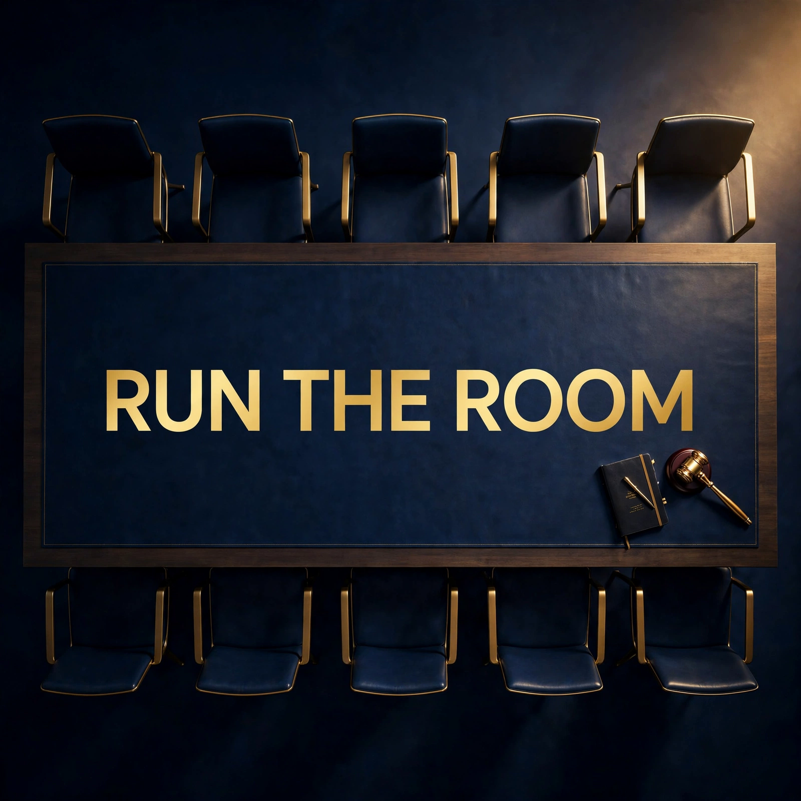

Business, built from the very beginning.
Most business advice starts in the middle — with tactics, tools, and meetings — and wonders why it doesn't hold together. Run the Room starts where business starts: an idea, a customer, and an exchange of value. From there it builds in order — the legal shape, the money in and out, the books, pricing, the first customers, the first hires, the daily operations — until the organization is standing on its own.
Hosts Alex and Jordan take one step each week, in plain language, with the people who actually run businesses as guests. Meetings get their own stretch of the season later on — because by then you'll know what the meeting is for.
Episode 1: Starting From Zero: What a Business Actually Is — the true beginning: what a business is, why it exists, and the three legs every one of them stands on.
The Format
Foundations First
The season starts at the very beginning — what a business is, the idea, the customer — before a single tactic. Nothing later assumes anything the show hasn't covered.
Every Aspect of Business
Structure and rules, money and the books, pricing, sales, marketing, hiring, operations, management — one step a week, in the order a real business meets them.
Meetings, In Their Place
Later in the season, a full module on the meetings that run an organization — each meeting type taken through planning, running, and follow-up, in context.
Listen
The trailer is out now. Episode 1 premieres Sunday, October 25 at 7:00 PM ET, and new episodes follow every Sunday.
The Road Ahead — Season One
First Principles
Starting From Zero: What a Business Actually Is
The Idea and the Customer
Making It Real: Structure, Registration, and the Rules
The Money
Money In, Money Out
The Books: Bookkeeping and Cash Flow
Pricing: What to Charge and Why
Getting Customers
The First Sale
Being Findable: Marketing That Fits
People and Operations
Your First People: Hiring
Running the Days: Operations
Leading People
Then the Meetings module: after a framing episode on why organizations meet, the show works through fifteen meeting types — IEP meeting, school board meeting, parent-teacher conference, job interview panel, performance review, project kickoff, team standup, sales presentation, nonprofit board meeting, town hall, sprint retrospective, hiring committee, Section 504 plan meeting, staff meeting, and disciplinary/HR meeting — each in three parts: planning, running, and follow-up. 45 episodes in the module.
Be a Guest
We interview the people who build and run real businesses: founders, owners, executives, board chairs, and the operators who carry their organizations. One conversation, about how your business actually works — how it started, how it makes money, how you run it day to day.
Guests are invited to close with a short plug for their organization — recorded by you, in your own voice (a phone voice memo is fine), and used exactly as you give it. Interview recordings are likewise used as-is: your voice, unaltered, on the record.
To be considered, write to runtheroom@outlook.com with your name, your role, and the part of running your business you'd most like to talk about.
Have a business story or question for the show? Request a call and a member of the production team will phone you.
Your information is protected — see our Privacy & Data Security page.
Internships
Run the Room offers unpaid, educational internships for business students — guest research, business research, and partnership outreach, all vetted by the producer before anything is used. Built to pair with academic credit. See the internship page.
Contact
Producer: Charles Mayfield
Show email: runtheroom@outlook.com
Phone: (978) 291-8525
Run the Room is an independent production by Charles Mayfield, who also produces Education Across the States. Each show keeps its own site, channels, and audience; the producer's chair is the shared part.